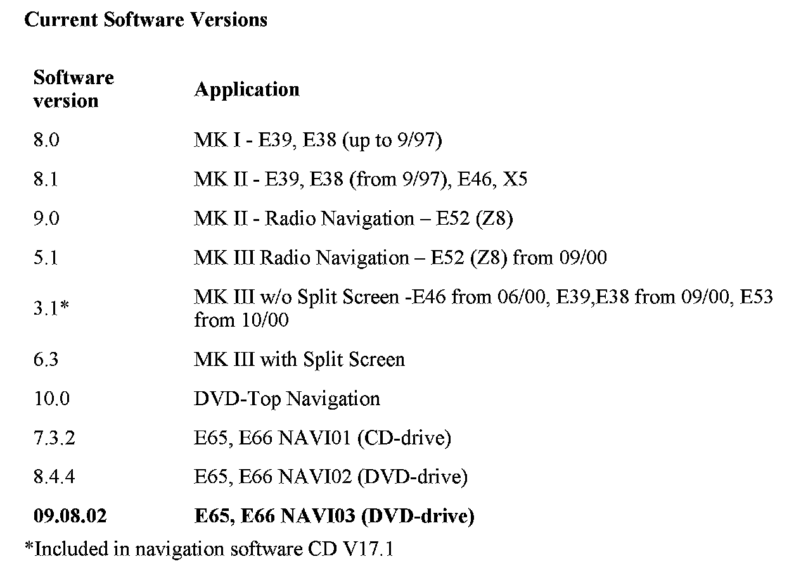
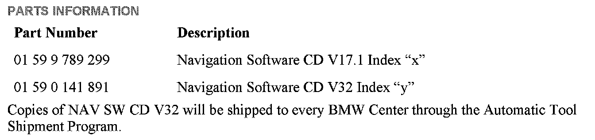

Navigation System - Software Version Information
SI B65 21 02Audio, Navigation, Monitors, Alarms, SRS
October 2010
Technical Service
This Service Information bulletin supersedes SI B65 21 02 dated June 2008.
[NEW] designates changes to this revision
SUBJECT
Navigation System Operating Software
MODEL
E38 (7 Series)
E39 (5 Series)
E46 (3 Series)
E53 (X5)
E83 (X3)
E85, E86 (Z4)
E65, E66 (7 Series)
INFORMATION
With the introduction of the navigation system operating software V32, there are currently 2 valid versions of navigation software:
1. Navigation system operating software V17.1 is used on MK III systems without the "split screen".
2. Navigation system operating software V32 is used on MK I, MK II, MK III navigation systems with split screen, DVD-Top navigation systems (MK IV) on I-Bus vehicles and NAVI01, NAVI02, NAVI03 on E65/E66 vehicles.
CORRECTION
Navigation system operating software should be updated under the following circumstances:
^ There are no corrections or new data for the US market included.
^ The navigation computer has been replaced.
^ Progman prompts the navigation software to be updated during programming/coding.
^ If instructed by a Service Information bulletin or the Regional Technical Engineer (RTE).
CORRECTIONS INTRODUCED WITH PRIOR NAVIGATION SOFTWARE V31
NAVI03 and DVD-Top NAV system-improved software for:
^ Reading dual layer DVDs
^ Loading voice files
CORRECTIONS INTRODUCED WITH PRIOR NAVIGATION SOFTWARE V30
^ E65 and E66: Navigation system is inoperative after arrival at destination
^ E65 and E66: Incorrect address book
NEW FEATURES INTRODUCED WITH NAVIGATION SOFTWARE V32
No new features
FEATURES INTRODUCED WITH PRIOR NAVIGATION SOFTWARE V31 AND V30
No new features
FEATURES INTRODUCED WITH PRIOR NAVIGATION SOFTWARE V29
Destination input screen text changes:
^ "State/Province" instead of "Country"
^ "City/Postal Code" instead of "City/ZIP"
^ "Town/City" instead of "City" (only in conjunction with road maps before 2006-2)
FEATURES INTRODUCED WITH PRIOR NAVIGATION SOFTWARE V28
E83, E85, and E86 - software fix for the following display/flap issues:
^ Display turns back on after switching "Monitor off".
^ Flap opens/closes by itself
^ Flap doesn't open.
FEATURES INTRODUCED WITH PRIOR NAVIGATION SOFTWARE V27
Only E46 (3 Series), E53 (X5), E83 (X3), E85 (Z4) with the DVD-Top navigation system:
^ Disclaimer screen disappears automatically after 8 seconds.
^ City/Town names displayed in the map.
E46 (3 Series), E53 (X5), E83 (X3), E85 (Z4) with the DVD-Top navigation system;
E65, E66 (7 Series) DVD NAVI03 (from 03/05):
Destination input when "Country" (United States or Canada) is selected via:
^ ZIP code (only for the United States)
^ City name
Destination input when a US state or a Canadian province is selected via:
^ Street name
^ City name
^ ZIP code (only for the United States)
Note -
Only in conjunction with NAVTEQ DVD road Map 2006-2 or a more recent version:
^ P0I (Point of Interest) icons and "City center" icons are displayed together.
^ Travel Information (TMC) is no longer displayed (is inactive and not selectable).
^ Entries in "Address Book/Last Destination" displayed as:
City name, street name (destination entry via city name)
ZIP code, city name, street name (destination entry via ZIP code)
^ Product information
^ Legal disclaimer for usage of the navigation system and the data on the NAVTEQ road maps
^ How to report missing or incorrect data feedback to NAVTEQ:
Web site: www navteq.com/bmwmaps
FEATURES INTRODUCED WITH PRIOR NAVIGATION SOFTWARE V26
^ The actual location is shown as an arrow in a circle.
^ The destination is marked with a checkered flag.
^ Map positioning in "travel direction" can now be selected in scales up to 100 mi.
^ Disabled P0I icons are now selectable on I-Bus DVD NAV systems in:
General Destinations
Travel Information
^ The following functions are now selectable on the E65 and E66 with NAVI03 (from 03/2005):
Hide Map icons
General destinations and travel information
After loading NAVI SW V32, the vehicle must be driven to ensure the proper functioning of the navigation system and the correct display of road number icons (e.g., interstate icons).
CHECKING THE SOFTWARE VERSION
MK I Systems
The software version is shown in the top right corner of the "setting" screen. The software/hardware version is displayed as "1-1/80". The numbers have the following meanings: the first digit, 1, is a 1st generation navigation system (MK I); the second digit, 1, is a 1st device variant (top navigation - MK IIc color screen), the last two digits, 80, are the software version of the graphic component (8.0).
MK II Systems
The software version is shown in the top right corner of the "setting" screen. The software/hardware version is displayed as "2-1/81". The numbers have the following meanings: the first digit, 2, is a 2nd generation navigation system (MK II); the second digit, 1, is a 1st device variant (top navigation - MK LLc color screen); the last two digits, 81, are the software version of the graphic component (8.1).
MK III Systems
The software version is shown in the top right corner of the "setting" screen. The software/hardware version is displayed as "3-1/63" or "3-2/63" (MK III with split screen). The numbers have the following meanings: the first digit, 3, is a 3rd generation navigation system (MK III); the second digit, 1, is a 1st device variant (top navigation - MK IIIc color screen), or 2 is a 2nd device variant (radio navigation - MK IIIm monochrome display); the last two digits, 63, are the software version of the graphic component (6.3).
DVD-Top navigation system for I-Bus vehicles
The software version is shown in the top right corner of the "setting" screen. The software/hardware version is displayed as "4-1/00". The numbers have the following meanings: the first digit, 4, is a 4th generation navigation system (DVD); the second digit, 1, is a 1st device variant (top navigation - DVD color screen); the last two digits, 00, are the software version of the graphic component (10.0).
E65 and E66 Systems
^ Enter the Service Mode of the Control Display.
^ Select "MOST Devices".
^ Scroll down and select "Navigation".
^ Scroll down a few pages until "Software Version" is displayed.
^ Software version for CD navigation (NAVI01) should be 7.3.2 (I-level E065-05-03-810.2).
^ Software version for DVD navigation (NAVI02) should be 8.4.4 (I-level E065-05-03-800.2).
^ Software version for DVD navigation (NAVI03) should be E065-08-03-550 (SW 09.08.02).

Current Software Versions
LOADING SOFTWARE (ALL EXCEPT THE E65 AND E66)
For MK I, MK II, MK III, and DVD-Top NAV Systems (except for the E65 and E66), use the following software loading instructions:
1. Turn the ignition to position 1 (terminal R).
Do not cycle the key or perform diagnosis while installing the new software. Make sure that the power supply is stable, i.e., do not switch on any electrical loads.
2. Activate "GPS-Navigation" and acknowledge the screen disclaimer by pushing the rotary knob on the board monitor.
3. Remove the map CD from the navigation computer by pressing the "Eject" button.
4. Insert the navigation software CD (V17.1 P/N 01 59 9 789 299 index "x" for Mk III without the split screen; V32 P/N 01 59 0 141 891 index "y" for all other versions).
5. Mark I System (up to 9/97 production):
After a few seconds, the BMW roundel will appear on the board monitor and will be "filled in" clockwise to show the progress of loading (approx. 4-6 minutes).
Mark II System (from 9/97 production)
Mark III System (E46 from 06/00 and E38, E39, and E52 from 09/00 production)
DVD-Top navigation system (E46, E39, E52 from 09/02 and E53, E85 from 10/02 production):
After a few seconds, a menu of notes on the loading procedure and the "Progress" bar appear on the board monitor.
When the loading process has been completed, the message "Software has been successfully loaded" is displayed.
6. Remove the navigation system operating software CD and confirm the end of the loading process by pressing the rotary knob on the board monitor. "OK" appears in the display.
7. Drive the vehicle before delivering it to the customer to ensure that the navigation system is functioning and displaying (interstate icons) correctly.
LOADING SOFTWARE (E65 AND E66 ONLY)
[NEW]When programming any E65 or E66, the "BMW navigation CD" must be loaded prior to programming the vehicle.
Note:
Connect an approved battery charger before loading the software.
1. Turn the ignition on to Terminal R or 15.
2. Enter the navigation menu.
3. Remove the NAVTEQ road map CD/DVD.
4. [NEW] Insert the navigation operating software CD V32 (P/N 01 59 0 141 891 index "y") into the navigation computer and use the latest ISTA/P version.
5. Select "Yes" with the controller to install the software.
6. The software will then load in two steps, taking approximately 10-15 minutes.
7. Do not touch the iDrive while the software is loading.
8. When the installation is finished, the CD will be ejected. The message "Installation Successful, Remove Software loading CD and press OK" will appear. At this point, select "OK" with the controller.
9. The navigation system will then "Reinitialized".
10. When prompted, insert the NAVTEQ road map CD/DVD.
11. [NEW] Refer to SI B09 05 01 (New Programming and Coding System: ISTA/P) for any necessary coding and programming. Note that ISTA/P will automatically reprogram all programmable control units that do not have the latest software.
12. Drive the vehicle before delivering it to the customer to ensure that the navigation system is functioning and displaying (interstate icons) correctly.
NAVIGATION COMPUTER REPLACEMENT - MK III AND DVD NAV
[NEW] When replacing a defective MK III or DVD NAV computer, a configuration signal is required to allow the new computer to load the correct software for its respective application. This is generated by using the iSSS (Software Service Station) loaded with the latest ISTA/P version, and the navigation system operating software CD V17.1 or V32.
1. Connect the Deutronic battery charger to the vehicle.
2. Connect the SSS via a diagnostic head or an O(P)PS (for D-CAN vehicles) to the vehicle.
3. Open a "New session in Progman; select "Load SW" and follow the on-screen messages.
4. Select "Retrofits".
5. Select "Languages".
6. First select "Display" to select and/or check the correct languages.
7. Then select "Navigation" to select the languages for the NAV system.
8. At the prompt "Is the CD-ROM present?" select "Yes", but do not insert the navigation CD into the Nav Computer yet!
9. First select the main language and then an additional language (the choices are English, French, Italian, Spanish, and German).
10. NOTE: The gender of the announcer's voice (male or female) can no longer be selected.
^ MKI, MK II & MK III: Only male.
^ DVD-Top NAV, NAVI01, NAVI02 and NAVI03: Only female.
11. After activation of the automatic coding, the DIS tester tells you to follow the instructions on the monitor for navigation CD installation.
12. Place the navigation CD into the navigation computer CD drive.
Important:
Do not switch the ignition OFF during the software loading procedure.
13. Once the loading has been completed, remove the CD and then confirm completion by pressing the rotary push button on the monitor.
14. Turn the ignition OFF for 10 seconds, and then turn it ON and conduct a functional check.
15. After this step has been finished, encode the navigation computer in the regular manner, using the path "1 Recoding".
TROUBLESHOOTING HINTS
The following problems may occur during the software loading procedure:
^ The message "CD defective" appears on the display screen.
^ The message "Fault during programming" appears on the display screen.
^ The message "The system is restarting" appears on the display screen.
^ The installation process has stopped; the display screen is blank; and the power LED on the navigation computer is off The CD will not eject.
These complaints are usually the result of a faulty navigation operating software CD.
^ For points 1-3 (error messages that appear on the display screen), check for the correct software version and try loading a new navigation CD.
^ For a CD that will not eject from the navigation computer, follow the procedure below:
1. Remove the navigation computer.
2. Unplug the voltage supply (blue connector).
3. Reconnect the voltage supply, and immediately press the eject button repeatedly until the CD in the drive is ejected.
4. Insert a new navigation software CD and restart the installation process.

PARTS INFORMATION
WARRANTY INFORMATION
Updating the vehicle at the customer's request is not covered under warranty.